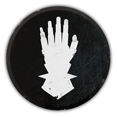

Iron Hands
| Iron Hands X Legion · the Gorgon's sons | |
|---|---|
 Badge of the Iron Hands: the gauntlet of Ferrus Manus Artwork © Games Workshop | |
| Founding | First Founding, c. 700.M30[a]; re-formed after the Second Founding |
| Legion number | X |
| Primarch | Ferrus Manus (the Gorgon; slain at Isstvan V) |
| Leadership | The Iron Council; no Chapter Master. Iron Father Kardan Stronos is its war leader and envoy |
| Homeworld | Medusa, Segmentum Obscurus |
| Fortress | None fixed; ten mobile Land-Behemoths, one for each clan company |
| Allegiance | Loyalist, Imperium of Mankind |
| Colours | Black and grey |
| Battle cry | "The flesh is weak!" |
| Organisation | Ten clan companies drawn from the ten clans of Medusa |
| Successor Chapters | Brazen Claws, Iron Fists, Iron Lords, Knights of Byzantium, Red Talons, Sons of Medusa, Steel Confessors; Star Dragons (suspected) |
| Notable battles | |
| Drop Site Massacre of Isstvan V; the Gaudinian Heresy (460.M41); the Moirae Schism; wars against Hive Fleet Leviathan | |
| Notable members | |
| Ferrus Manus, Gabriel Santar, Amadeus DuCaine, Kristos, Kardan Stronos | |
The Iron Hands, the Xth Legion of the first Space Marines, are a loyalist Space Marine Chapter of the Adeptus Astartes and one of the original Space Marine Legions. Their Primarch, Ferrus Manus, was a weapon-smith without equal and a warlord of uncompromising temper, and the Legion took from him a belief in the power of the forge and a certain contempt for what is weak. After his death in the Drop Site Massacre that belief hardened into doctrine. The Iron Hands hold that human flesh is frail, that it is the origin of every failing a warrior has, and that it should be replaced piece by piece with metal. Their devotion to the Emperor of Mankind is not in doubt, but their theology of the body brings them close to the Adeptus Mechanicus.[1]
The Legion's response to Ferrus Manus's death was a council. No single warrior has ruled the Iron Hands since the Heresy; the Iron Council of the clan companies' senior officers governs the Chapter, and it plans each campaign with a cold mathematical method called the Calculum Rationale. The Chapter's greatest crisis since then, the Gaudinian Heresy of 460.M41, nearly destroyed it from within and changed its philosophy. In the Era Indomitus the Iron Hands have joined the war against Hive Fleet Leviathan and the awakened tomb worlds.[2]
History
[edit]The Xth Legion
[edit]The Xth Legion was raised near the end of the Unification Wars. Its recruits came from across Terra, including the cities of the Qavitine Plate and the defeated blocs of the Solus Stellax, but a large part was drawn from the warrior culture of Old Albia, a source it shared with the Death Guard. That inheritance of pride in a martial ancestry marked the Legion's character in its earliest years. Its first commander was Lord Commander Amadeus DuCaine, who led it through the closing wars of Terra and the first years of the Great Crusade.[3]
The Gorgon of Medusa
[edit]The primarch's gestation capsule fell on Medusa, a cold world several times the size of Terra, fourth planet of the supergiant star Sthenelus in the Segmentum Obscurus. In the age of technology Medusa had been a mining colony, and its descendants lived in nomadic clans of techno-barbarians on a surface of moving mountains and violent seas, keeping a corrupted faith in a half-remembered machine cult. Ferrus Manus grew among them and united the clans by leading them against the monsters that preyed on them. From a beast he killed, he took the silver metal that covers his forearms and hands, and which he forged and shaped with his bare fingers. The Medusan clans called him the Gorgon.[3]
When the sky over Medusa split a second time, in 824.M30, Ferrus went to the landing site alone. Eight days of storms and earthquakes followed. After them he came back, and the Emperor stood with him. A warlord of his own world, he adapted quickly to the Great Crusade and was soon commanding the Legion in the field.[3]
The Phoenician and the Gorgon
[edit]The friendship between Ferrus Manus and Fulgrim is among the best known of the primarchs' bonds. They met beneath Mount Narodnya on Terra, in the greatest forge of the Urals, where each came to prove his skill. Each forged a weapon in three months of work: Fulgrim a warhammer, Forgebreaker, that could level a mountain, and Ferrus a golden-bladed sword, Fireblade. Each then declared the other's weapon the better. In the later years of the Great Crusade, in c. 001.M31, the Legion encountered the Diasporex, a fleet-based people of humans and aliens who refused to abandon their allies. The Iron Hands tried to destroy them; the Diasporex proved to be fine void fighters, and Ferrus Manus came to rescue Fulgrim's gunship from their fleet. Fulgrim resented the rescue for months afterwards.[3]
Horus Heresy
[edit]
When Horus rebelled, Fulgrim sided with him, and the Emperor's Children attempted to win the Iron Hands for the Warmaster. Ferrus Manus rejected the offer and was wounded in an attack by his own brother at Deep Orbital DS191 in c. 004.M31.[a] Some accounts describe the treachery as an ambush, with ten of the primarch's praetorians cut down. In the Isstvan campaign of 006.M31 Ferrus Manus led the second wave, seven Legions drawn up to crush the four open Traitors. Four of the seven, the Night Lords, Iron Warriors, Word Bearers and Alpha Legion, were already sworn to Horus.[4]
The Iron Hands, Salamanders and Raven Guard fell on the Urgall Depression in the opening assault. Ferrus Manus led his Morlocks into the centre. The fighting was fierce but the Loyalists were successful until the arrival of the second wave, whose guns turned on their allies. In the confusion, Ferrus Manus saw that Fulgrim had betrayed him and confronted him. Imperial accounts, assembled from the survivors' testimony, agree on the end: Fulgrim cut off his head with a daemon-sword from Laeran. The tale of Ferrus's death is the one most often retold in the Chapter, and no man alive can say what became of his remains. Some say Fulgrim kept the head for Horus, others that agents of the Dark Mechanicum took the body for a gene-seed project, and some that the Legion recovered it in part. The Iron Hands have kept the question open ever since.[4] The Legion's First Captain, Gabriel Santar, and Lord Commander DuCaine were killed in the same slaughter.
The Tempering
[edit]The survivors returned to Medusa in despair in c. 006–007.M31.[a] The despair turned to anger, and the anger was disciplined. A council of clan captains and the most senior warriors met to decide what the Legion should become without its father. It debated for weeks, and its decisions, known as the Tempering, set the Legion's course for ten thousand years: no single warrior should lead the Iron Hands again; flesh should be replaced by metal as far as practicable; and every judgement should be made by calculation rather than by temper. It was the Tempering that gave the Chapter the Iron Council and, in time, the habit of the Calculum Rationale.[2]
Second Founding and the long millennia
[edit]The Legion was divided into Chapters under the Codex Astartes in the Second Founding of 021.M31. The Iron Hands kept the ten great clans of Medusa for themselves and gave other clan companies to their Successor Chapters, among them the Brazen Claws, Iron Fists, Iron Lords, Knights of Byzantium, Red Talons and Steel Confessors. The Chapter claims to have followed the Codex with the reluctance of a warrior told to leave a limb behind, and then to have found it logical.[2]
The Chapter's service in the following millennia was constant and hard. In M34 the Pale Wasting spread through the galaxy, and Clan Raukaan, on the request of Mars, helped enforce a quarantine around the forge world Grammachus Beta. In the early 35th millennium, during the Nova Terra Interregnum, the Moirae Schism divided the Cult Mechanicus. Its radical doctrine, drawn from the predictions of three tech-mystics who read patterns in the flicker of the Astronomican, spread to Chapters close to Mars, and a large part of the Iron Hands accepted it. The Iron Council averted civil war by exiling the dissenters from Medusa under a treaty never to return. Those who left became the Sons of Medusa. Clan Raukaan, under Iron Chaplain Furnous and Captain Hekkan, had remained untouched.[2]
The Gaudinian Heresy
[edit]In 460.M41 more than eight hundred Iron Hands, led by Iron Father Kristos of Clan Raukaan, descended on the Gaudinia System. It was the largest deployment in centuries. The expedition was walking into a trap. A daemon called the Sapphire King, born in the Warp from the psychic echo of Ferrus Manus's death, fed on the emotions that the Iron Hands had repressed for millennia. Kristos, nearly four fifths machine, who had no face but only lenses set about his helm, was corrupted. His followers, the Kristosians, fell to the twisted perfection of flesh engines, and daemons of Slaanesh and Legionaries of the Emperor's Children attacked the rest. The Iron Hands won, at a heavy price. Nearly a third of the Iron Council had been lost to corruption. Had the Inquisition learned of it, it might have ended the Chapter.[2]
A new resolve
[edit]The Iron Hands had to ask whether their obsession with purging emotion had been a weakness. Kardan Stronos, an Iron Father of Clan Raukaan, said that it had. Courage and anger, he argued, were not flaws to cut away but the strength that had saved the Chapter on Gaudinia. His view was not accepted by all, and the Iron Council has since been divided. Stronos has been confirmed as the Council's war leader for more than three centuries.[2]
Era Indomitus
[edit]Under the Calculum Rationale, the Iron Hands will commit only the force that the Council has judged to be sufficient for victory. They send no more and no less. When their strength is insufficient they refuse to fight. In the wars against the Tyranids, the Iron Council has judged Hive Fleet Leviathan a blasphemy of living machinery and sent Stronos against it. It has also faced the necron dynasties, which it holds even more blasphemous, and has begun the Grand Calculation, a review of where the Chapter and its Successors should stand in the final war. Primaris Space Marines have joined the Chapter's clans. Clan Raukaan, now led by an inner circle of Chief Librarian Lydriik, Iron Chaplain Shulgaar, Iron Captain Grolvoch and the Master of the Forge Feirros, has become the most active.[2][5]
Organisation
[edit]The Legion
[edit]The Xth Legion was built on what Imperial scholars call organised compartmentalisation. It was composed of interlocking components, such as squads, armoured squadrons and support elements, each with its own specialisation and chain of command, answerable only to itself and its superiors. In this it differed from the single graded hierarchy of the Imperial Fists or the Ultramarines' rigid order. The Legion's elite companies were the Morlocks, the primarch's honour guard, led by First Captain Gabriel Santar. The Legion fielded a large armoured arm and fought as a siege and attrition army.[2]
The Chapter
[edit]The Chapter is not led by a Chapter Master. It has ten clan companies, each drawn from one of the clans of Medusa and each carrying the identity, customs and command structure of its clan. They are Avernii, Garrsak, Raukaan, Kaargul, Haarmek, Sorrgol, Borrgos, Morlaag, Vurgaan and Dorrvok. Each clan company is a unit unto itself, and one of its warriors sits on the Iron Council as an Iron Father. Dreadnoughts, who have long been free of the flesh, are often among the Council's most revered members. When the Council needs a single commander for a campaign it elects one, who holds the powers of a Chapter Master until the campaign is complete. The Chapter's fortress-monasteries are not planetary but mobile: Land-Behemoths, one for each clan company.[2]
Combat doctrine
[edit]Ferrus Manus believed in the direct and overwhelming application of force, and since the Tempering the Chapter has taken that belief to its limit. Before any deployment the Iron Council makes the Calculum Rationale: an estimate of enemy strength, air and orbital support, reinforcements, weather and many further factors, which gives the exact number of battle-brothers and vehicles required. That number, and no other, is released. No reinforcements are sent if the battle goes badly. If the Chapter does not have the required force at hand, it will not fight. The method has saved many lives and has left the Iron Hands open to the charge of indifference to allies who depend on them. Astra Militarum officers often find their discipline and their coldness equally trying.[2]
Beliefs and culture
[edit]
The Iron Hands revere the Emperor as the creator of the Imperium and, through the primarch, the origin of their Legion, but their faith is more precisely a faith in the machine. They believe that augmetic replacement purifies a warrior. A battle-brother who has served without fail may be given the Blessing of Iron, the replacement of an arm, an eye or an organ by a mechanical equivalent, as a mark of honour. Another honour is the Forgechain, a column of augmetic vertebrae in which each link, made of a clan company's own chosen metal, replaces a vertebra on the Space Marine's induction into that company. Clan Raukaan uses black sigilanium veined with theldrite circuitry. The Chapter's armour is black and grey, in a monochrome metallic style, and its marks are clan emblems on the right pauldron.[2]
The Mechanicus has noted that the Iron Hands' attitude to flesh has about it elements that its own priests regard as heterodox. Rumour of tech-heresy follows the Chapter, and the Inquisition has watched it closely since Gaudinia.[2]
Gene-seed
[edit]The gene-seed is stable, but the Adeptus Mechanicus believe that it has developed a flaw since the death of Ferrus Manus, a psychological one in which the battle-brother comes to fear and hate his own body. The condition, known as the Steel Over Flesh, develops in three stages. In the first a battle-brother scars or punishes his own flesh. In the second he becomes prone to cold fury, and has to struggle against violence. In the third he refuses to fight alongside allies he regards as weak, even mortal ones. The Chapter treats the condition with augmetics, which both relieve and feed it.[2]
Successors
[edit]The Iron Hands' Successor Chapters are the Brazen Claws, Iron Fists, Iron Lords, Knights of Byzantium, Red Talons and Steel Confessors, with the Sons of Medusa, who were exiled in the Moirae Schism. The Star Dragons are suspected of descent.[2]
Heraldry
[edit]The badge of the Chapter is an iron gauntlet, for the hands of the primarch. Colours are black and grey. The right pauldron carries the emblem of the wearer's clan company, a cog or gear with a distinct mark for each, such as a skull for Avernii and a hexagonal cog for Raukaan. The role of the squad is shown on the left knee plate.[2]
Notable members
[edit]- Ferrus Manus, primarch
- Gabriel Santar, First Captain of the Morlocks
- Amadeus DuCaine, Lord Commander of the Legion
- Kristos, Iron Father of Clan Raukaan, fallen at Gaudinia
- Kardan Stronos, Iron Father and war leader of the Iron Council
- Lydriik, Chief Librarian of Clan Raukaan
Timeline
[edit]| Date | Event |
|---|---|
| c. 700.M30 | The X Legion is raised on Terra in the First Founding under Lord Commander Amadeus DuCaine.[a] |
| 798.M30 | The Great Crusade begins. |
| 824.M30 | Ferrus Manus is found on Medusa and takes command of the Legion. |
| After 830.M30 | Ferrus and Fulgrim forge Fireblade and Forgebreaker beneath Mount Narodnya.[a] |
| c. 001.M31 | The Diasporex persecution.[a] |
| c. 004.M31 | Fulgrim's attempt to turn Ferrus at Deep Orbital DS191.[a] |
| 006.M31 | The Drop Site Massacre at Isstvan V: Ferrus Manus slain by Fulgrim. |
| c. 006–007.M31 | The Tempering on Medusa; the Iron Council takes command.[a] |
| c. 014–021.M31 | The Great Scouring.[a] |
| 021.M31 | The Second Founding divides the Legion into Chapters. |
| M34 | The Pale Wasting; Clan Raukaan quarantines Grammachus Beta. |
| M35 | The Moirae Schism splits the Chapter; the Sons of Medusa go into exile. |
| 460.M41 | The Gaudinian Heresy and the fall of Iron Father Kristos. |
| Early M42 | Primaris Space Marines join the clans; the Iron Council begins the Grand Calculation. |
See also
[edit]Notes
[edit]References
[edit]- ^ Codex: Space Marines (9th Edition), pg. 10. Games Workshop. Wraight, Chris. Wrath of Iron (novel). Black Library.
- ^ a b c d e f g h i j k l m n o Wraight, Chris. Wrath of Iron (novel). Black Library, Ch. 1. Codex Heretic Astartes - Death Guard (8th Edition), pg. 22. Games Workshop.
- ^ a b c d Codex: Space Marines (8th Edition) (Revised Codex), pp. 52-55. Games Workshop. Codex Supplement: Iron Hands (8th Edition), pp. 6-12, 14, 22-34, 50-51. Games Workshop.
- ^ a b McNeill, Graham. Fulgrim (novel). Black Library. Dembski-Bowden, Aaron. The First Heretic (novel). Black Library.
- ^ Kyme, Nick. Promethean Sun (novella). Black Library. McNeill, Graham. Angel Exterminatus (novel). Black Library.